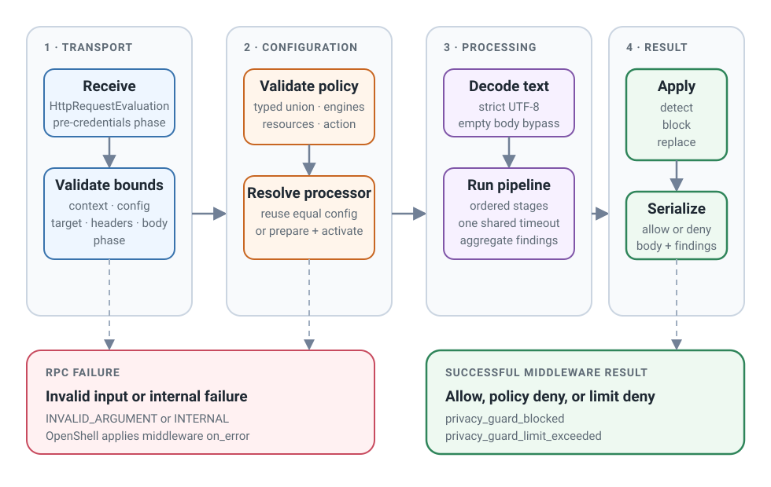

Request lifecycle¶
Each OpenShell evaluation carries request metadata, body bytes, and complete Privacy Guard configuration. The service validates the transport, resolves the active processor, processes one text value, and serializes the result.
Lifecycle summary¶

1. Validate the transport¶
The service checks:
- pre-credentials middleware phase
- request context size
- policy configuration size
- target size
- header count and size
- request body size
Input at another middleware phase or outside a transport bound fails the RPC as invalid input.
2. Validate configuration¶
The service converts the protobuf Struct to a mapping and validates it through
the finalized registry-backed Pydantic model.
Validation includes:
- exact fields and strict types
- known engine discriminator
- stage count and unique stage names
- engine-specific config
- registered resource compatibility
- action and replacement-strategy compatibility
- catalog shape and Regex pattern compilation
ValidateConfig performs these checks without constructing engines or changing
the active processor.
3. Resolve the active processor¶
The service compares the complete immutable validated configuration with the active one:
| State | Behavior |
|---|---|
| Equal configuration | Reuse the active processor |
| No active processor | Construct every stage engine and activate the processor |
| Changed configuration | Prepare a complete candidate and atomically replace the active processor |
| Validation or preparation failure | Keep the active processor unchanged and fail the triggering evaluation |
Only one preparation path runs at a time. Configuration validation still runs for every evaluation.
4. Decode the request body¶
An empty body is allowed without invoking an engine after configuration validation and processor resolution.
A non-empty body must decode as strict UTF-8. The decoded str is the only
request input passed to RequestProcessor. Headers, target, content type,
request ID, and protobuf objects remain in the service layer.
5. Select the engine strategy¶
The processor derives one strategy for the complete stage pipeline:
| Policy action | Engine strategy |
|---|---|
detect |
DETECT |
block |
DETECT |
replace |
REPLACE |
Engines never receive PolicyAction.
6. Run stages in order¶
The processor:
- validates the input UTF-8 size
- creates one monotonic
Timeout - calls each stage once in policy order
- passes the current text, strategy, and shared timeout
- validates each returned result and intermediate size
- passes returned text to the next stage
- checks the timeout after final result validation
In DETECT, each engine must return its input text unchanged. In REPLACE, a
later stage receives the preceding stage's output.
If a stage times out, exceeds a limit, or fails, its partial output is discarded and later stages do not run.
7. Validate engine output¶
The public engine wrapper checks:
- returned model type
- supported strategy
- non-empty spans within the stage input
- per-stage detection count
- output UTF-8 size
- unchanged text in
DETECT - at least one detection when text changes in
REPLACE
Detection offsets refer to the stage input. Privacy Guard does not remap earlier offsets after later replacement stages change the text.
8. Aggregate detections¶
After all stages succeed, the processor aggregates occurrences by:
It does not deduplicate across stages. Stages may inspect different text revisions, and confidence values from different engines are not assumed to be calibrated.
Aggregated summaries exclude matched text, surrounding text, offsets, patterns, and engine metadata.
9. Apply the policy action¶
| Action | No detections | One or more detections |
|---|---|---|
detect |
Allow original body | Allow original body and report summaries |
block |
Allow original body | Deny with privacy_guard_blocked and report summaries |
replace |
Allow final text | Allow final text and report summaries |
A timeout or processing-limit failure returns a deny with
privacy_guard_limit_exceeded and no partial summaries or replacement.
10. Serialize the result¶
The service maps the domain result to OpenShell:
| Domain result | OpenShell result |
|---|---|
| Detect allow | DECISION_ALLOW, has_body=false |
| Block with no detections | DECISION_ALLOW, has_body=false |
| Replace allow | DECISION_ALLOW, has_body=true, final UTF-8 body |
| Policy block | DECISION_DENY, privacy_guard_blocked |
| Limit deny | DECISION_DENY, privacy_guard_limit_exceeded |
For detect and block, OpenShell keeps the exact original bytes. For replace, Privacy Guard returns the final encoded text even when it equals the input.
Failure outcomes¶
| Outcome | Transport status | Request effect |
|---|---|---|
| Policy block | Successful RPC | Deny |
| Processing limit | Successful RPC | Deny |
| Invalid request or configuration | INVALID_ARGUMENT |
OpenShell applies middleware on_error |
| Internal engine or service error | INTERNAL |
OpenShell applies middleware on_error |
See Limits and failure behavior for the complete error and bound reference.